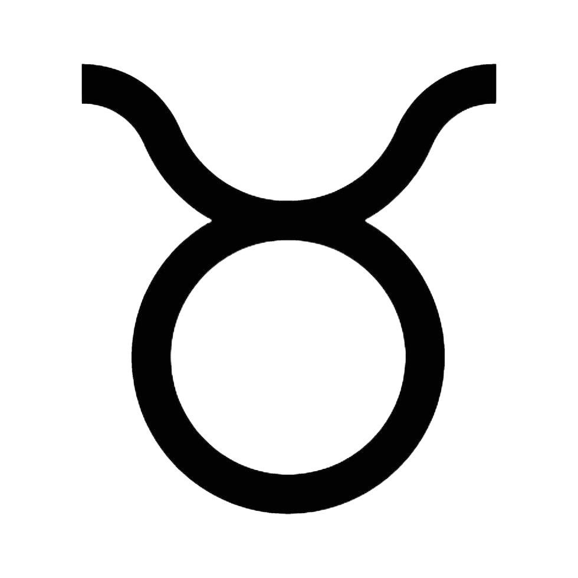
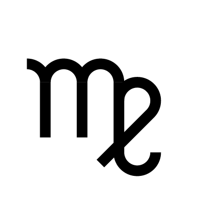

Aries

Birthdate: March 21 - April 19
Element: Water
Traits: Empathetic, creative, and intuitive.
Aries is bold, energetic, and full of enthusiasm. They are natural leaders who thrive on challenges and adventures. With their fiery personality, they often inspire those around them. Aries individuals are courageous but can sometimes be impulsive. They value independence and love taking the initiative.
2025 Horoscope: Bold Transformation. This year brings opportunities for courageous decisions and leadership. Relationships will thrive if you prioritize communication. Trust your instincts for success.
Taurus 
Birthdate: March 21 - April 19
Element: Water
Traits: Empathetic, creative, and intuitive.
Aries is bold, energetic, and full of enthusiasm. They are natural leaders who thrive on challenges and adventures. With their fiery personality, they often inspire those around them. Aries individuals are courageous but can sometimes be impulsive. They value independence and love taking the initiative.
2025 Horoscope: Building Foundations. Focus on long-term stability in relationships and career. Be open to new ideas for unexpected growth.
Gemini

Birthdate: May 21 - June 20
Element: Air
Traits: Adaptable, curious, and social.
Gemini is curious, adaptable, and highly social. They are excellent communicators who love learning and exploring new ideas. With their lively personality, they thrive in dynamic environments. Geminis often juggle multiple interests and activities. They can be indecisive but always bring excitement wherever they go.
2025 Horoscope: Expanding Horizons. Embrace new learning opportunities and adventures. Focus on meaningful connections and avoid overcommitting.
Cancer

Birthdate: June 21 - July 22
Element: Water
Traits: Nurturing, intuitive, and protective.
Cancer is nurturing, intuitive, and deeply connected to their emotions. They prioritize family and close relationships, offering unwavering support. Known for their protective nature, they create safe spaces for loved ones. Cancerians are imaginative and empathetic. However, they can sometimes retreat into their shell when hurt.
2025 Horoscope: Emotional Growth. Strengthen emotional bonds and step out of your comfort zone for career success. Balance is key.
Leo

Birthdate: July 23 - August 22
Element: Fire
Traits: Charismatic, ambitious, and generous.
Leo is confident, charismatic, and loves being in the spotlight. They have a natural flair for leadership and inspire those around them. With their warm and generous nature, Leos are loyal friends and partners. They crave admiration and often excel in creative pursuits. At times, their pride can be a challenge.
2025 Horoscope: Shining Bright. A year of success and recognition. Use your talents wisely and remain grounded to avoid burnout.
Virgo 
Birthdate: August 23 - September 22
Element: Earth
Traits: Analytical, organized, and detail-oriented.
Virgo is analytical, practical, and detail-oriented. They are perfectionists who strive for excellence in everything they do. With their organized approach, they are reliable problem solvers. Virgos are thoughtful and enjoy helping others. However, they can be overly critical of themselves and others.
2025 Horoscope: Strategic Progress. Plan methodically and execute your goals. Trust in the process and enjoy the journey.
Libra
Birthdate: September 23 - October 22
Element: Air
Traits: Diplomatic, artistic, and sociable.
Libra is diplomatic, charming, and values harmony in all areas of life. They have a strong sense of fairness and seek balance in relationships. Librans are social butterflies who enjoy meaningful connections and aesthetic beauty. They excel at resolving conflicts with grace. Indecisiveness can sometimes hold them back.
2025 Horoscope: Harmony and Adventure. Balance personal goals with relationships and embrace creative projects for fulfillment.

Scorpio

Birthdate: October 23 - November 21
Element: Water
Traits: Intense, passionate, and determined.
Scorpio is intense, passionate, and deeply determined. They are known for their emotional depth and powerful intuition. Scorpios approach life with focus and commitment, often excelling in their pursuits. They value loyalty and truth but can be secretive. Their resilience helps them overcome any challenge.
2025 Horoscope: Transformation and Renewal. A year of self-discovery and emotional growth. Trust your intuition and embrace new beginnings.
Sagittarius
Birthdate: November 22 - December 21
Element: Fire
Traits: Adventurous, optimistic, and philosophical.
Sagittarius is adventurous, optimistic, and loves exploring the world. They have a thirst for knowledge and enjoy philosophical discussions. With their free-spirited nature, they value independence and new experiences. Sagittarians are great storytellers and bring positivity to others. At times, they can be overly blunt.
2025 Horoscope: Expansive Opportunities. Take on challenges and explore new horizons. Stay grounded as you pursue your dreams.

Capricorn

Birthdate: December 22 - January 19
Element: Earth
Traits: Disciplined, ambitious, and responsible.
Capricorn is disciplined, ambitious, and focused on long-term goals. They are hard-working individuals who value structure and responsibility. Capricorns excel in leadership roles and are known for their perseverance. They are loyal and dependable but can sometimes seem reserved. Patience and determination define them.
2025 Horoscope: Achievement and Balance. Hard work will pay off, but remember to balance success with self-care.
Aquarius

Birthdate: January 20 - February 18
Element: Air
Traits: Innovative, independent, and forward-thinking.
Aquarius is innovative, independent, and forward-thinking. They are visionaries who love exploring new ideas and helping humanity. With their intellectual approach, they thrive on meaningful conversations and creativity. Aquarians are social yet value their individuality. Sometimes, they may appear detached emotionally.
2025 Horoscope: Creative Innovation. Focus on collaboration and staying true to your vision. Explore new ideas.
Pisces

Birthdate: February 19 - March 20
Element: Water
Traits: Empathetic, imaginative, and intuitive.
Pisces is empathetic, imaginative, and deeply intuitive. They are dreamers who connect deeply with emotions and creativity. Pisceans often have a strong artistic side and a desire to help others. They are compassionate and value meaningful relationships. However, they can be overly sensitive at times.
2025 Horoscope: Intuitive Growth. A year of creativity and emotional connection. Trust your instincts for personal and spiritual fulfillment.